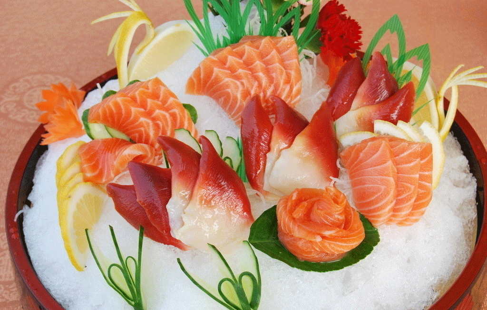
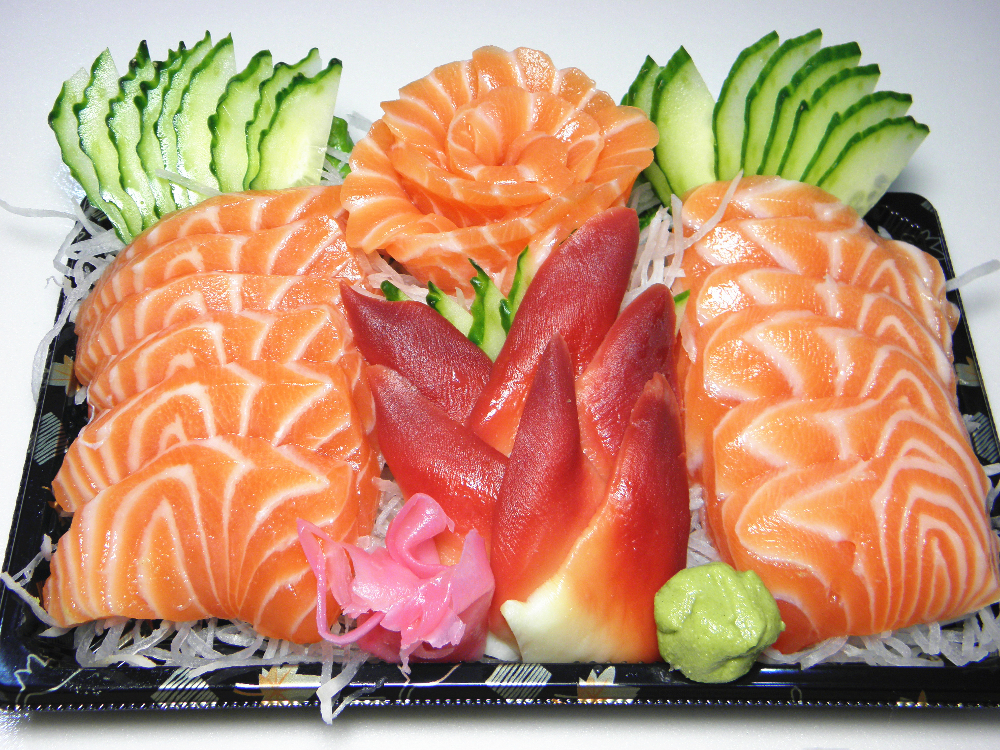

▶刺身 Sashimi
即生鱼片，是日本人最佳的生食。自古以来日本就有吃生食的习惯，江户时代以前生鱼片主要以鲷鱼、鲆鱼、鲽鱼、鲈鱼等为材料，这些鱼肉都是白色的。现在，日本人把贝类、龙虾等切成薄片，也叫“生鱼片”。去掉河豚毐，切成薄片的河豚鱼，是生鱼片中的佼佼者，制作河豚刺身的厨师，必须取得专业资格，这刺身鲜嫩可口，但价格很贵。吃生鱼片要以绿色芥末和酱油作佐料。这芥末的日语叫“ゎさび”，是生长在瀑布下或山泉下一种极爱干净的植物“山葵”。山葵像小萝卜表皮黑色，肉质碧绿，磨碎捏团放酱油吃生鱼片，它有一种特殊的冲鼻辛辣味，既杀菌，又开胃。日本的生鱼片异常新鲜，厚薄均匀，长短划一。生鱼片盘中点缀这白萝卜丝、海草、紫苏花，体现出日本人亲自然的饮食文化。

